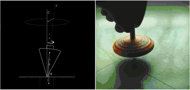
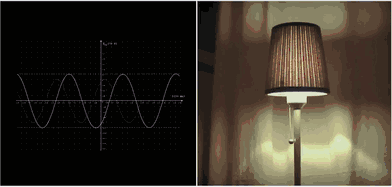
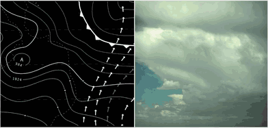
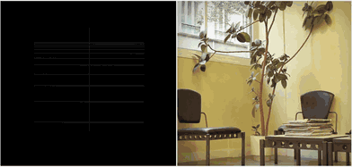
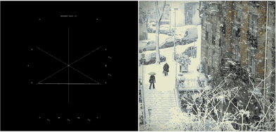
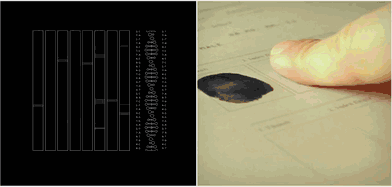
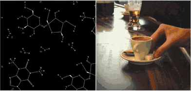
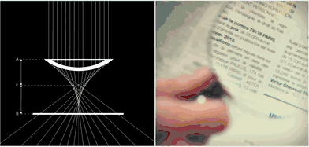

课程简介
计算科学发展史
自然界隐藏着大量的规律和模式, 但是大多数人都对此习以为常, 很少有人会思考,为什么是这样样子.
一些伟大的头脑注意到了这些细节, 带我们开启了通往未来世界的大门.
伽利略（1564-1642）世界知名科学家，他既是物理学家、天文学家、哲学家又是发明家，他发明了温度计和天文望远镜。他被称为“现代科学之父”。
通过实验,伽利略发现摆的周期——即往返一次的时间，与摆锤的重量无关。如果绳子的长度一样，只是改变摆锤的重量，摆的周期不变。实验还表明了，摆的周期与摆锤的体积、形状也没有关系。这就是著名的摆的周期定律。
牛顿(1643年1月4日-1727年3月31日) 物理学家,数学家, 牛顿发现了许多隐藏在宇宙模式背后的定律，而且还发明了微积分等数学技术，这为我们理解宇宙的基本定律提供了重要工具。牛顿用他的三大运动定律清楚地描述了运动物体的运动方式。这些定律全部可以用数学来描述，特别是微分方程，可以精确地描述运动如何随时间演化。
$$
T=2\pi \sqrt {\dfrac {L}{g}}
$$
如果钟摆的长度l=1m，那么T=2.00607，其中g=9.81m/s.
牛顿把物理世界和虚拟世界统一在了一起, 创造了一种用数学来预测系统未来的方法.为理解宇宙问题提供了解决思路:
- 写出描述物理系统的方程公式
- 用方程公式来预测未来
这是整个科学发展史伤转折性的时代.
法国数学家拉普拉斯（Pierre Simon Laplace）在1814年发表了一则大胆的声明
我们可以把宇宙现在的状态视为其过去的果以及未来的因。假如一位智者能知道在某一时刻所有促使自然运动的力和所有构成自然的物体的位置，假如他也能够对这些数据进行分析，那么在宇宙中，从最大的物体到最小的粒子，它们的运动都包含在一条简单的公式里。对于这位智者来说，没有任何事物会是含糊的，并且未来只会像过去般出现在他眼前。
混沌展示仪

看似随机,高度混沌的行为,还是可以用数学公式去表达,这只是一个双摆系统.
混沌运动的一个关键特征在于它们对初始条件的敏感性，两个非常接近的初始状态会以非常不同的方式进化，然后产生混沌。这种现象有一个通俗易懂的名字——蝴蝶效应。


上帝是个数学家










课程目标
- 复习初中,高中,大学的数学常识.
- 熟悉numpy, sympy等科学计算程序库
- 能用计算机求解多项式,微积分,离散数学,矩阵运算,排列组合和统计学问题
- 为opencv, 机器学习, 深度学习打下基础.
附录(代码)
1
2
3
4
5
6
7
8
9
10
11
12
13
14
15
16
17
18
19
20
21
22
23
24
25
26
27
28
29
30
31
32
33
34
35
36
37
38
39
40
41
42
43
44
45
46
47
48
49
50
51
52
53
54
55
56
57
58
59
60
61
62
63
64
65
66
67
68
69
70
71
72
73
74
75
76
77
78
79
80
81
82
83
84
85
86
87
88 | %matplotlib notebook
from numpy import sin, cos
import numpy as np
import matplotlib.pyplot as plt
import scipy.integrate as integrate
import matplotlib.animation as animation
G = 9.8 # 重力加速度
L1 = 2.0 # 连杆1的长度
L2 = 1.0 # 连杆2的长度
M1 = 1.0 # m1的重量
M2 = 1.0 # m2的重量
def derivs(state, t):
dydx = np.zeros_like(state)
dydx[0] = state[1]
del_ = state[2] - state[0]
den1 = (M1 + M2)*L1 - M2*L1*cos(del_)*cos(del_)
dydx[1] = (M2*L1*state[1]*state[1]*sin(del_)*cos(del_) +
M2*G*sin(state[2])*cos(del_) +
M2*L2*state[3]*state[3]*sin(del_) -
(M1 + M2)*G*sin(state[0]))/den1
dydx[2] = state[3]
den2 = (L2/L1)*den1
dydx[3] = (-M2*L2*state[3]*state[3]*sin(del_)*cos(del_) +
(M1 + M2)*G*sin(state[0])*cos(del_) -
(M1 + M2)*L1*state[1]*state[1]*sin(del_) -
(M1 + M2)*G*sin(state[2]))/den2
return dydx
# 运行100秒 步长0.05
dt = 0.05
t = np.arange(0.0, 100, dt)
# th1 th2 初始角度(单位度degrees)
# w1 w2 初始角速度
th1 = 120.0
w1 = 0.0
th2 = -10.0
w2 = 0.0
# 初始状态
state = np.radians([th1, w1, th2, w2])
# integrate your ODE using scipy.integrate.
y = integrate.odeint(derivs, state, t)
x1 = L1*sin(y[:, 0])
y1 = -L1*cos(y[:, 0])
x2 = L2*sin(y[:, 2]) + x1
y2 = -L2*cos(y[:, 2]) + y1
fig = plt.figure(figsize=(5,5),dpi=80)
ax = fig.add_subplot(111, autoscale_on=False, xlim=(-4, 4), ylim=(-4, 4))
ax.grid()
line, = ax.plot([], [], 'o-', lw=2)
time_template = 'time = %.1fs'
time_text = ax.text(0.05, 0.9, '', transform=ax.transAxes)
def init():
line.set_data([], [])
time_text.set_text('')
return line, time_text
def animate(i):
thisx = [0, x1[i], x2[i]]
thisy = [0, y1[i], y2[i]]
line.set_data(thisx, thisy)
time_text.set_text(time_template % (i*dt))
return line, time_text
ani = animation.FuncAnimation(fig, animate, np.arange(1, len(y)),
interval=100, blit=True, init_func=init)
# ani.save('double_pendulum.mp4', fps=15)
plt.show()
|